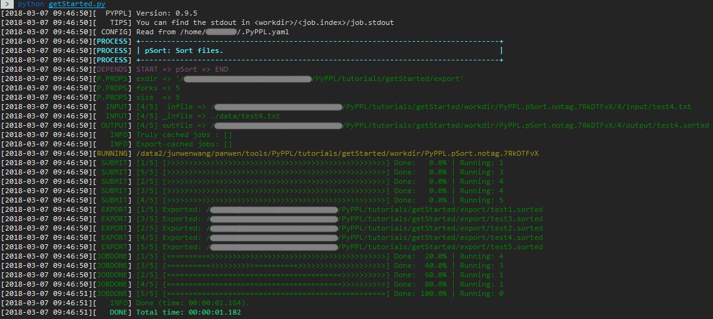
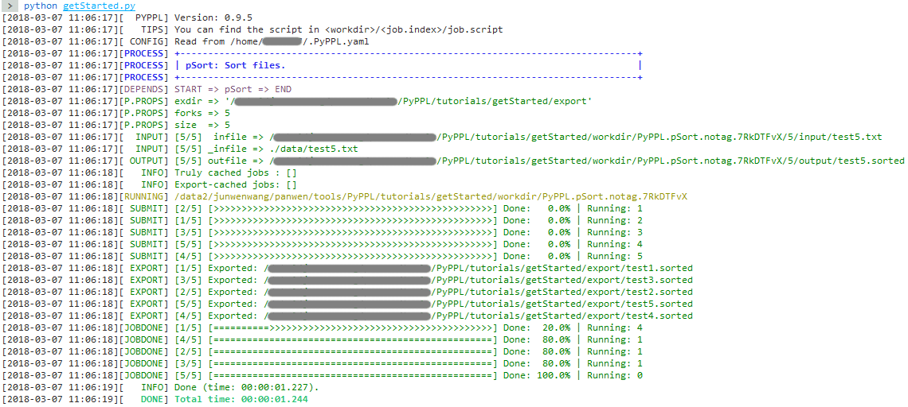
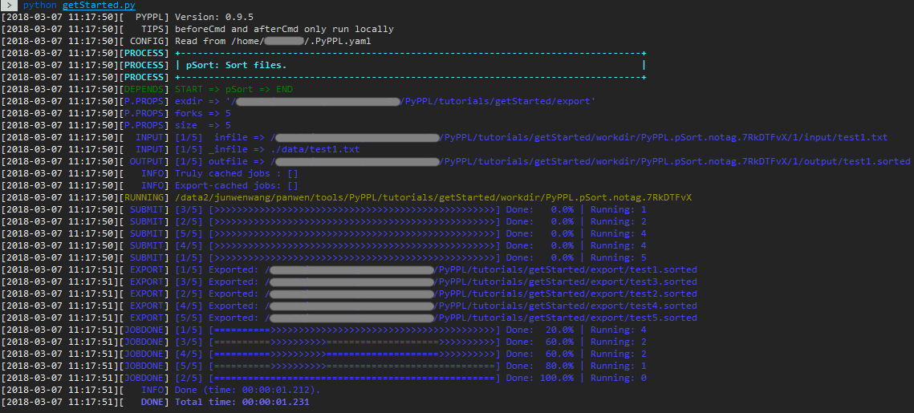
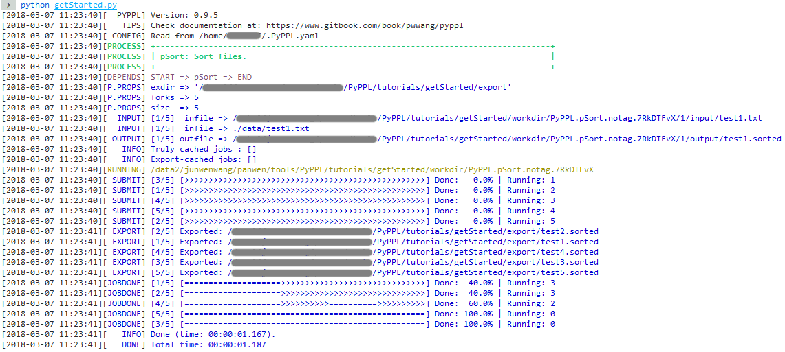
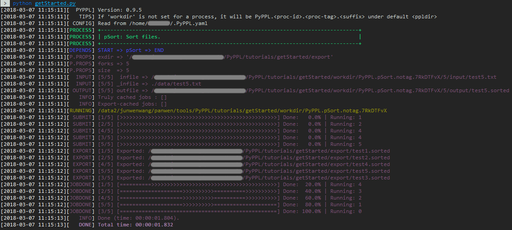
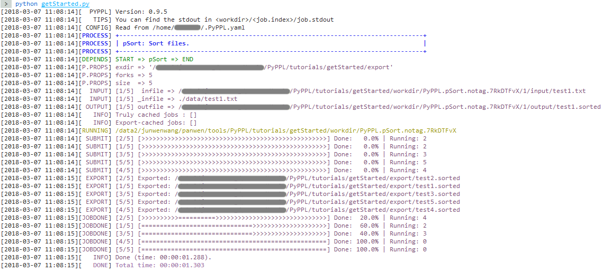
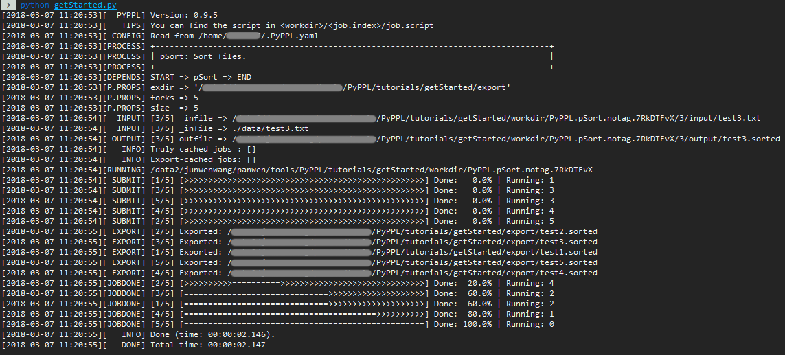
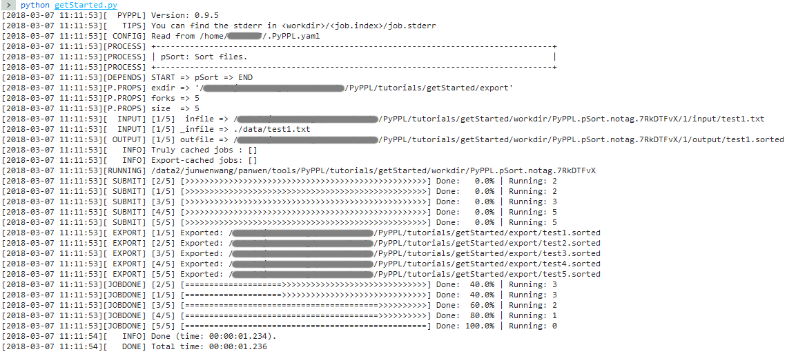

Log configuration
Configure your logs
PyPPL has fancy logs. You can define how they look like (theme) and what messages to show (levels).
Built-in log themes
We have some built-in themes:
greenOnBlack (default): 
greenOnWhite:  blueOnBlack: 
blueOnWhite: 
magentaOnBlack: 
magentaOnWhite: 
If you don't like them, you can also disable them:  
To use them, just specify the name in your pipeline configuration file:
{
"_log": {
"theme": "magentaOnWhite"
}
}
PyPPL({"_log": {"theme": "magentaOnWhite"}}).start(...).run()
"theme" to False (false for json)
If you set theme to True, then default theme greenOnBlack is used.
Levels of pyppl logs
Please note that the levels are different from those of python's logging module. For logging module has 6 levels, with different int values. However, pyppl's log has many levels, or more suitable, flags, which don't have corresponding values. They are somehow equal, but some of them always print out unless you ask them not to.
Note
The log levels are a little bit different from here, please see debug your script.
You may also specify the group name in your pipeline configuration file:
{
"_log": {
"levels": "nodebug"
},
// running profiles ...
}
PyPPL({"_log": {"levels": "nodebug"}}).start(...).run()
You can also explicitly define a set of messages with different levels to show in the logs:
{
"_log": {"levels": ["PROCESS", "RUNNING", "CACHED"]}
}
Even you can modify the base groups:
{
"_log": {
"levels": "normal",
"lvldiff": ["+DEBUG", "P.ARGS", "-SUBMIT"]
}
}
DEBUG, P.ARGS messages will show, and SUBMIT will hide.
Define your theme
Let's see how the built-in theme looks like first:
in pyppl/logger.py:
themes = {
'greenOnBlack': {
'PROCESS' : [colors.bold + colors.cyan, colors.bold + colors.underline + colors.cyan],
'DONE' : colors.bold + colors.green,
'DEBUG' : colors.bold + colors.black,
'DEPENDS' : colors.magenta,
'PROCESS' : [colors.bold + colors.cyan, colors.bold + colors.underline + colors.cyan],
'in:SUBMIT,JOBDONE,INFO,P.PROPS,OUTPUT,EXPORT,INPUT,P.ARGS,BRINGS': colors.green,
'has:ERR' : colors.red,
'in:WARNING,RETRY' : colors.bold + colors.yellow,
'in:CACHED,RUNNING': colors.yellow,
'' : colors.white
},
# other themes
}
in: matches the messages with level name in the following list, which is separated by comma (,).
- has: matches the messages with level name containing the following string.
- starts: matches the messages with level name starting with the following string.
- re: uses the following string as regular expression to matchThen empty string key (
'') defines the colors to use for the messages that can not match any of the above rules.
For the values, basically it's a 2-element list, where the first one defines the color to show the level name; and the second is the color to render the message. If only one color offered, it will be used for both level name and message.
If you just want to modify the built-in themes, you can do it before you specify it to the pyppl constructor:
from PyPPL import logger, PyPPL
logger.themes['greenOnBlack']['DONE'] = logger.colors.cyan
# ... define some procs
PyPPL({'_log':{'theme': 'greenOnBlack'}}).start(...).run()
Yes, of course, you can also define a completely new theme:
from pyppl import logger, PyPPL
# ... define procs
PyPPL({'_log':
{'theme': {
'DONE': logger.colors.green,
'DEBUG': logger.colors.black,
'starts:LOG': logger.colors.bgwhite + logger.colors.black,
# ...
}}
}).start(...).run()
Available colors in logger.colors:
| Key | Color | Key | Color | Key | Color | Key | Color | Key | Color |
|---|---|---|---|---|---|---|---|---|---|
none |
''1 |
black |
red |
green |
yellow |
||||
end |
2 | blue |
magenta |
cyan |
white |
||||
bold |
A3 | bgblack |
bgred |
bggreen |
bgyellow |
||||
underline |
_4 | bgblue |
bgmagenta |
bgcyan |
bgwhite |
- An empty string; 2. End of coloring; 3. Show bold characters; 4. Show underline characters.
You can also use the directly terminal escape sequences, like \033[30m for black (check here).
If you define a theme in a configuration file, you may use the escape sequences or also use the color names:
{
"_log": {"theme": {
"DONE": "{{colors.green}}",
"DEBUG": "{{colors.black}}",
"starts:LOG": "{{colors.bgwhite}}{{colors.black}}",
# ...
}}
}
Log to file
By default, pyppl will not log to a file until you set a file path to {"_log": {"file": "/path/to/logfile"}} in the configuration. Or you can specfiy False to it to disable logging to file. If you set it to True, a default log file will be used, which is: "./pipeline.pyppl.log" if your pipeline is from file: ./pipeline.py
Note
Filters and themes are not applied to handler to log to file. So you can always find all logs in the log file if your have it enabled.
Progress bar
Job status and progress are indicated in the log with progress bar:
[==============================XXXXX!!!!!>>>>>-----]
50. You can change it in your code:
from pyppl import Jobmgr
Jobmgr.PBAR_SIZE = 80
Jobmgr.PBAR_SIZE = 9 and we have 5 jobs, then every two cells represent 1 job for first 8 cells, and last one represents job #5. The rule is trying to equally distributed the cells to jobs:
1 2 3 4 5 1 2 345 1 2345
[==XX!!>>-] NOT [===XXX!>-] OR [=====X!>-]
Jobmgr.PBAR_SIZE = 5:
1357
24689
[=X!>-]
The meaning of each sign in the cell:
- -: Job initiated
- !: Job failed to submit
- >: Job running
- X: Job failed
- =: Job done
Note that if a cell represents multiple jobs, it has a priority as above listed. For example, in the second situation, if job #1 is done, however, job #2 is running, then the sign should be >.
But if the progress bar belongs to a job (shown when a job is submitted or done), the status of the job has the highest priority. So in the above example, if the progress bar belongs to job #1:
[JOBDONE] [1/9] [=----] Done: x.x% | Running: x
^ Indicating current job
=.